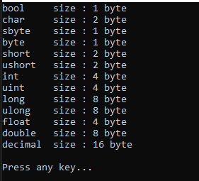
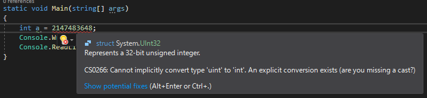
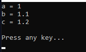
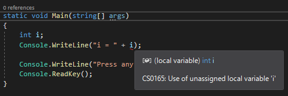

[C#] 4. データタイプとリテラル(literal)、 Nullable
こんにちは。明月です。
この投稿はデータタイプとリテラル(literal)、 Nullableに関する説明です。
以前の投稿で変数と定数を使う方法に関して説明しました。
link - [C#] 3. プログラミングの始めと変数と定数を使う方法
その投稿で変数を宣言する時にintという整数型のデータタイプを使いました。
データタイプは簡単に説明すると変数を宣言する時にメモリにどのぐらいのサイズほどメモリ空間を確保するかという作業です。
下記の表はメモリ上でデータタイプよりどのぐらいのサイズを割り当ての説明です。
| C#データタイプ | .NETデータタイプ | 説明 | サイズ |
|---|---|---|---|
| bool | System.Boolean | True or False | |
| byte | System.Byte | 8ビットunsigned integer | 0 ~ 256 |
| sbyte | System.SByte | 8ビットsigned integer | -128 ~ 127 |
| short | System.Int16 | 16ビットsigned integer | -32,768 ~ 32,767 |
| int | System.Int32 | 32ビットsigned integer | -2,147,483,648 ~ 2,147,483,647 |
| long | System.Int64 | 64ビットsigned integer | -9,223,372,036,854,755,808 ~ 9,223,372,036,854,755,807 |
| ushort | System.UInt16 | 16ビットunsigned integer | 0~65,535 |
| uint | System.UInt32 | 32ビットunsigned integer | 0 ~ 4,294,967,295 |
| ulong | System.UInt64 | 64ビットunsigned integer | 0 ~ 18,446,744,073,709,551,615 |
| float | System.Single | 32ビットsingle precision浮動小数点数 | ±1.5*10-45~±3.4*1038 |
| double | System.Double | 64ビットdouble precision浮動小数点数 | ±5.0*10-324~±1.7*10308 |
| decimal | System.Decimal | 128ビットDecimal | ±1.0*10-28~±7.9*1028 |
| char | System.Char | 16ビットユニコード文字 | |
| string | System.String | ユニコード文字列 | |
| System.DateTime | 時間 | ||
| object | System.Object | すべての親タイプ |
using System;
namespace Example
{
class Program
{
// 実行関数
static void Main(string[] args)
{
// コンソールに出力
Console.WriteLine("{0}\t size : {1} byte", "bool", sizeof(bool));
Console.WriteLine("{0}\t size : {1} byte", "char", sizeof(char));
Console.WriteLine("{0}\t size : {1} byte", "sbyte", sizeof(sbyte));
Console.WriteLine("{0}\t size : {1} byte", "byte", sizeof(byte));
Console.WriteLine("{0}\t size : {1} byte", "short", sizeof(short));
Console.WriteLine("{0}\t size : {1} byte", "ushort", sizeof(ushort));
Console.WriteLine("{0}\t size : {1} byte", "int", sizeof(int));
Console.WriteLine("{0}\t size : {1} byte", "uint", sizeof(uint));
Console.WriteLine("{0}\t size : {1} byte", "long", sizeof(long));
Console.WriteLine("{0}\t size : {1} byte", "ulong", sizeof(ulong));
Console.WriteLine("{0}\t size : {1} byte", "float", sizeof(float));
Console.WriteLine("{0}\t size : {1} byte", "double", sizeof(double));
Console.WriteLine("{0}\t size : {1} byte", "decimal", sizeof(decimal));
// 改行
Console.WriteLine();
// 任意のキーを押してください
Console.WriteLine("Press any key...");
Console.ReadLine();
}
}
}

上のデータタイプは変数を宣言する時の前にサイズを合わせて設定することです。
プログラムはデータタイプの種類は大幅で文字、文字列、正数、実数のことに分けています。 なので、正数タイプに文字列や実数データを格納するとエラーやバグが発生します。
上の結果をみればcharが2byteになっていることが見えます。これが他の言語の差異がある部分ですが、C/C++の場合は1 byteの値の-128~127のサイズを持っています。その理由はC/C++の文字は基本asciiコードでC#はユニコードを使うからです。
なので、C/C++でデータバイナリ値を作る時にunsigned charを使いますが、C#にはbyteデータタイプを利用します。この説明は文字列(string)と文字列コードに説明する時に詳細に説明します。
データタイプの種類がたくさんありますが、実際に使うのはstring(文字列)、bool(真偽)、int(整数)、float(実数)、double(実数)、byte(バイナリデータ用)だけだと思います。
ここでサイズを計算する時にすべてbyteで計算しています。パソコンは内部で数はすべてbit(ビット)の二進数で計算します。そして1byteは8bitになります。
つまり、byteのデータタイプが1byteのデータを格納するといえば、0~255(0含めて256個)まで表現ができます。
intタイプは4byteのデータサイズを使えます。つまり、2^32(8*4)まで表現ができます。そのサイズは4,294,967,296個になれ、正数2,147,483,647と負数-2,147,483,648まで表現が可能です。正数が1が少ない理由は、0が含まれているからです。
つまり、intタイプで2,147,483,647を超える値を格納するとエラーが発生します。

その以上のデータ値を使う場合はlongタイプがあります。でも、実際にその以上のデータを使う時にはlongタイプよりDecimalタイプを使います。
実数型は小数点以下を表現する時、floatタイプをよく使います。しかし、プログラムは浮動小数点誤差が発生することになります。なので実務ではDecimalタイプを使うか、小数点以下を整数に変換してから計算して、また実数に変換する方法で計算します。
性能(パフォーマンス)を考えるとDecimalタイプと整数に変換して計算することよりfloatやdoubleで直接に実数計算するほうが早いですが、誤差のリスクがあります。
ソースで数を区分するためのリテラル(literal)があります。floatタイプは数字の後にfをdoubleの場合はdを付けます。
using System;
namespace Exception3
{
class Program
{
// 実行関数
static void Main(string[] args)
{
// 整数はそのままに数字だけで良い。
int a = 1;
// flaotタイプはfを付ける。
float b = 1.1f;
// doubleタイプはdを付ける。
double c = 1.2d;
// コンソールに出力
Console.WriteLine("a = " + a);
Console.WriteLine("b = " + b);
Console.WriteLine("c = " + c);
// 改行
Console.WriteLine();
// 任意のキーを押してください
Console.WriteLine("Press any key...");
Console.ReadLine();
}
}
}

| C#リテラルデータタイプ | Suffix | 例 |
|---|---|---|
| long | L | 1024L |
| uint | U | 1024U |
| ulong | UL | 1024UL |
| float | F | 10.24F |
| double | D | 10.24Dまたは10.24 |
| decimal | M | 10.24M |
我々がデータタイプと変数を宣言する時に基本的に初期値を格納しなければならないです。

上の例ならiの変数にデータを格納しなかったらデバッグ段階でエラーが発生します。
でも、我々は変数を宣言する段階ではデータを入れなくて、計算した後にデータを入れたい時がありますね。
プログラムでは変数のメモリは割り当てしますが、まだデータがない状況をヌル(Null)といいます。
基本的に原始データタイプにはヌル(Null)を許せません。原始データタイプにヌル(Null)タイプを使いたいないら疑問符(?)を付けてヌルタイプを許すように設定します。(※クラスタイプ以外はすべて原始データタイプに言います。)
using System;
namespace Example
{
class Program
{
// 実行関数
static void Main(string[] args)
{
// 整数タイプにヌルを許す。
int? a = null;
// コンソールに出力
Console.WriteLine("a = " + a);
// 任意のキーを押してください
Console.WriteLine("Press Any Key..");
Console.ReadLine();
}
}
}
結果を見ればなにも表示されてないです。
実は原始データタイプはNullが有ってもなくても仕様によりそんなに差異がありませんが、変数にインスタンスを割り当てる時にはヌル(Null)の意味がすごく重要です。
その内容に関してはインスタンス生成を説明する時に詳細に説明します。
ここまでデータタイプとリテラル(literal)、 Nullableに関する説明でした。
ご不明なところや間違いところがあればコメントしてください。
- [C#] クラス(class)とコンストラクタ、そしてnew(割り当て)2019/07/10 00:06:17
- [C#] プロパティ(property)2019/07/08 23:04:09
- [C#] アクセス修飾子(public, private, protected)2019/07/08 22:55:00
- [C#] メソッド(関数)とvoid型2019/07/07 23:12:30
- [C#] 制御文 - ループ分岐(break, continue)2019/07/07 22:54:13
- [C#] 10. クラスを作成する方法(コンストラクタ、デストラクタ)2019/07/06 00:53:17
- [C#] 9. 関数(Method)とオーバーロード、再帰呼び出し2019/07/06 00:38:29
- [C#] 8. 配列とリスト2019/07/05 00:12:42
- [C#] 7. 制御文2019/07/05 00:05:30
- [C#] 6. 演算子2019/07/04 00:09:43
- [C#] 5. データタイプ変換(キャスト:Cast)とコメント(Comment)2019/07/04 00:01:12
- [C#] 4. データタイプとリテラル(literal)、 Nullable2019/07/02 23:58:43
- [C#] 3. プログラミングの始めと変数と定数を使う方法2019/07/02 23:46:49
- [C#] 2. Visual Studioをインストールする方法2019/07/01 23:58:20
- [C#] 1. C#とは？2019/07/01 23:32:22
- [Javascript ] WebのFull calendar(スケジュールカレンダー)の使い方法2021/07/15 21:35:36
- [Java] 56. Web serviceのサーブレット(Servlet)で初期化作業(properties設定)2021/07/02 17:10:36
- [Java] 55. Spring frameworkに文字化けを解決する方法(Encoding設定)2021/06/30 16:37:16
- [Java] 54. Spring frameworkでWeb filterを使う方法2021/06/29 18:25:12
- [Java] 53. ウェブサービス(Web service)でエラーページを処理する方法2021/06/25 13:35:54
- [Design pattern] 1-3. ファクトリメソッドパターン(Factory method pattern)2021/06/23 19:45:37
- [Java] WebSocketでチャット履歴をローディングする方法2021/06/15 18:34:45
- [Java] WebSocketを利用してユーザ(サイト運用者)が他のユーザとチャットする方法2021/06/15 17:20:08
- [Design pattern] 1-2. ビルダーパターン(Builder pattern)2021/06/11 19:06:28
- [Design pattern] 1-1. シングルトンパターン(Singleton pattern)2021/06/09 19:40:05
- [Design Pattern] デザインパターンの紹介2021/06/08 20:42:36
- [Tools] Dbeaver(無料Sql queryブラウザツール)2021/04/28 18:26:49
- [Bootstrap] HTMLデザインのフレームワークのBootstrap紹介2020/07/30 19:06:36
- [Python] メール(smtplib)を送信する方法2020/07/27 18:38:43
- [Python] HttpConnection(requestsモジュール)でウェブサーバーで接続する方法2020/07/20 14:41:51